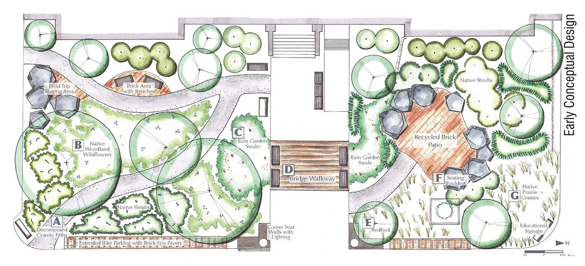
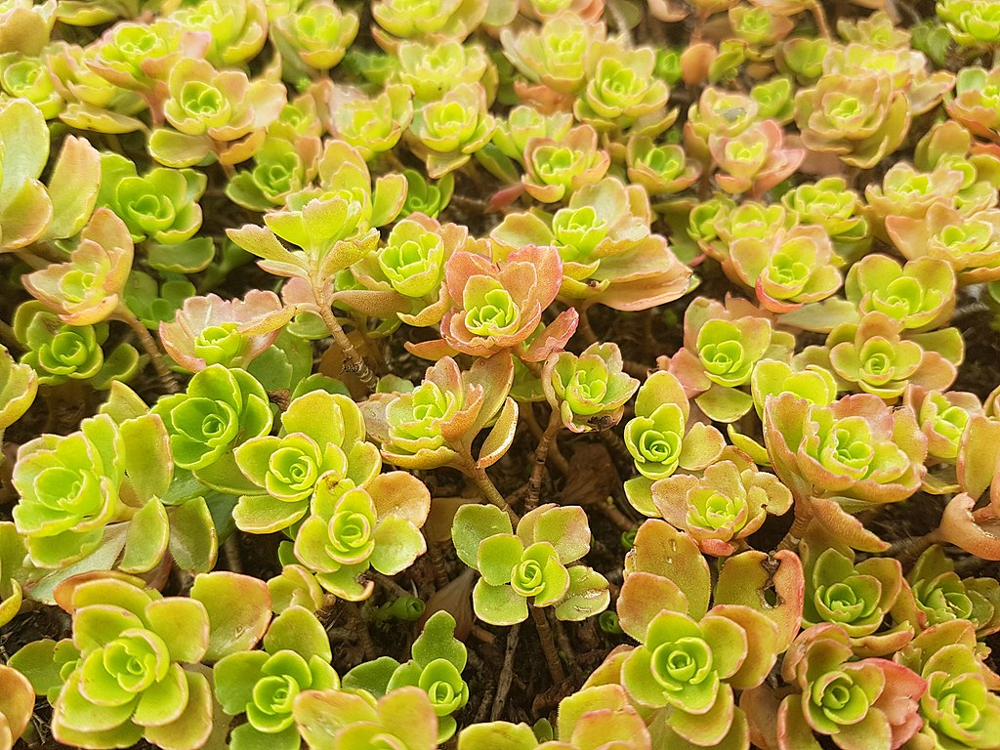
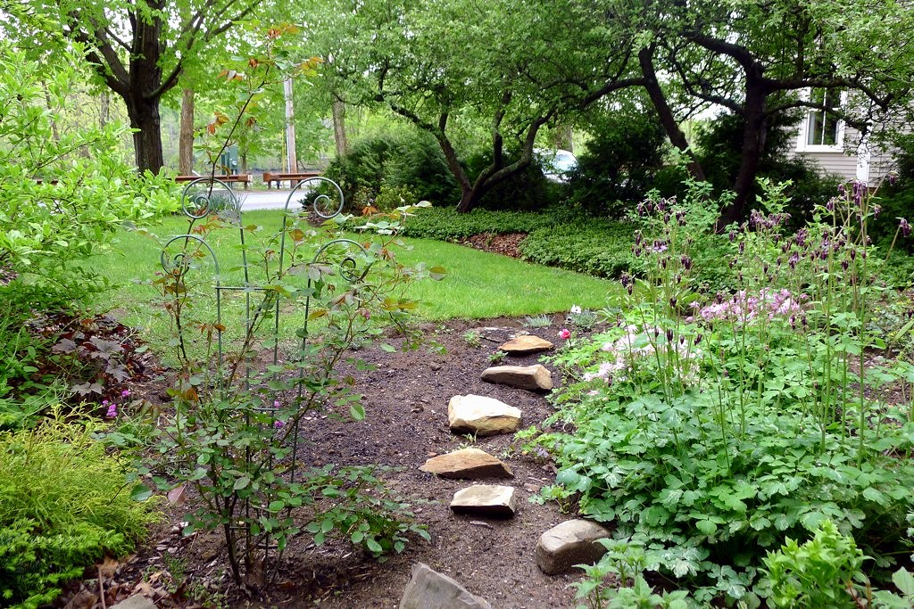
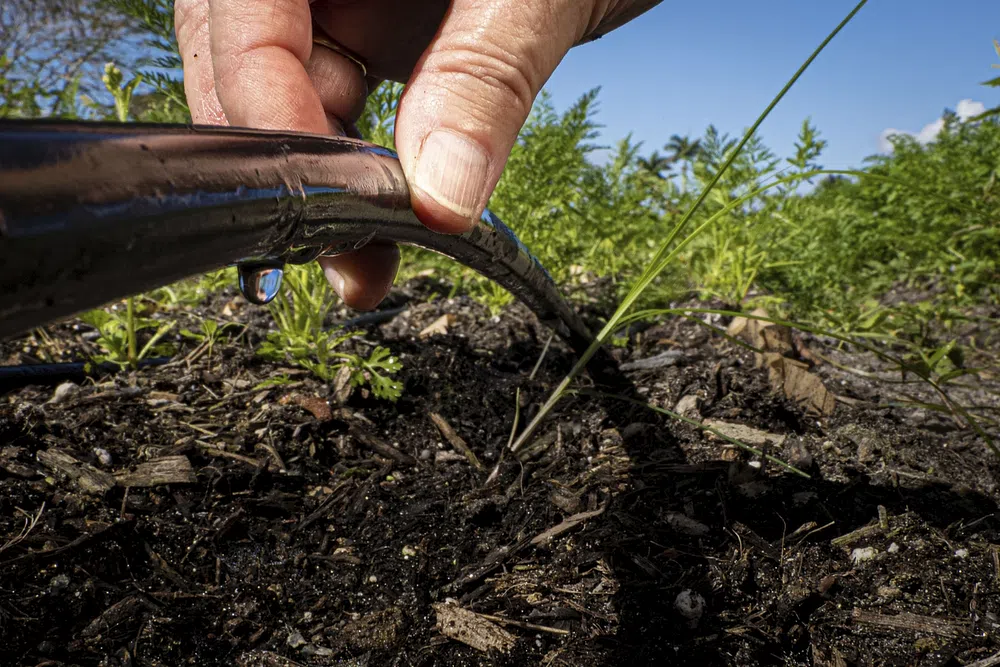
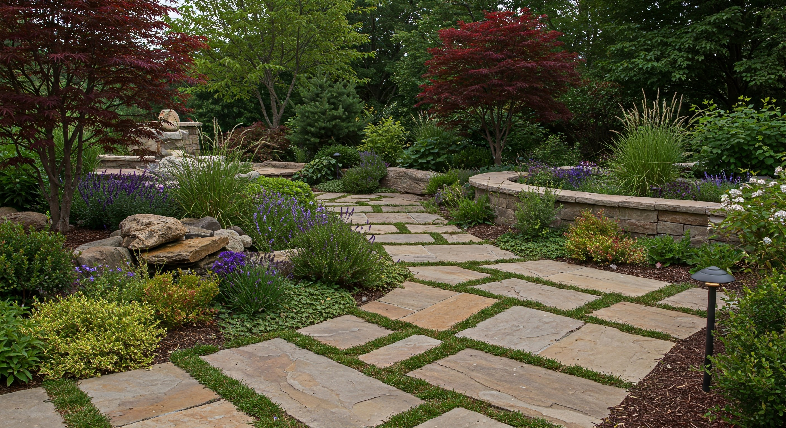
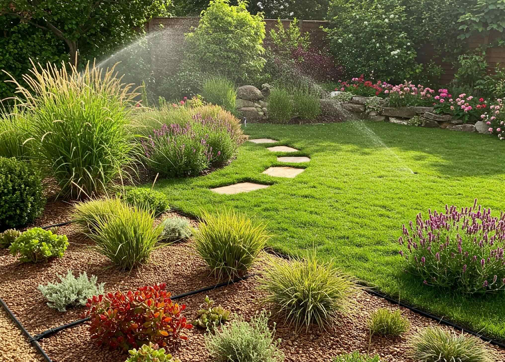
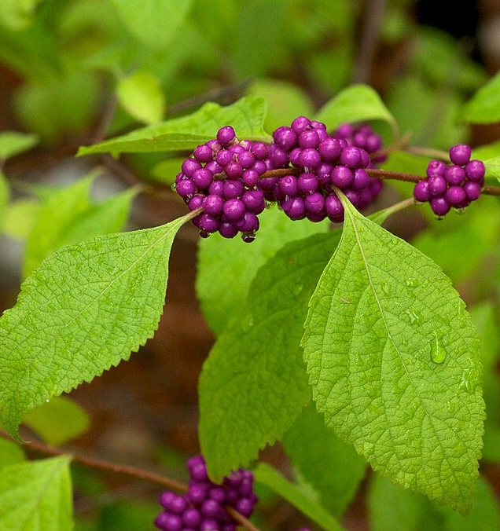
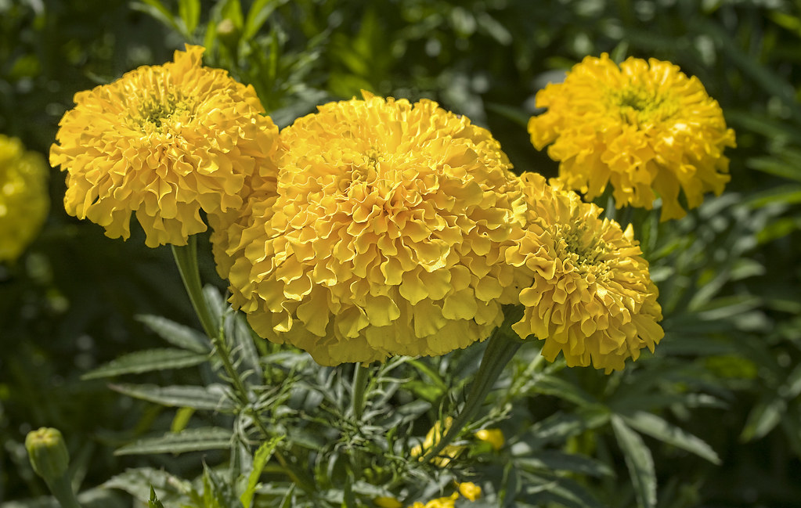

Low-maintenance landscaping is often misunderstood as simply replacing plants with rock or eliminating anything that needs care. In practice, some of the easiest landscapes to maintain are also full of living material.
The difference is design.
A plant that fits its space naturally requires less pruning. A bed with continuous groundcover produces fewer open niches for weeds. A tree placed for its mature size creates fewer future conflicts. Plants grouped by water needs simplify irrigation. Paths placed where people actually walk reduce compaction and repeated repair.
Maintenance is not something that begins after installation. Much of it is determined before the first plant goes into the ground.
Where Landscape Maintenance Really Comes From
Most recurring work can be traced back to a relatively small number of design decisions.
Plants unsuited to the site need continual help or replacement.
Plants that outgrow their location create lifelong pruning conflicts.
Mismatched water needs make irrigation complicated and inefficient.
Open soil continually creates opportunities for unwanted vegetation.
Every square foot of turf represents recurring mowing, edging, and management.
Difficult beds and poorly placed paths make every future task slower.
Plan the Site Before Choosing Plants
Start with conditions, use, and mature scale.

Before choosing plants, look at the physical site. Observe sunlight through the day, drainage after rain, slopes, existing trees, utilities, paths, buildings, fences, views, and how people actually move through the property.
Then consider the future landscape rather than only the installation-day landscape. A young shrub may fit almost anywhere. Its mature width may not.
Choose Plants That Naturally Fit the Job
Let growth habit do the work instead of constant pruning.

Native and climate-adapted plants can be valuable because they are often better matched to regional conditions, but suitability still depends on the specific site.
Mature height, mature width, soil moisture, sun exposure, rooting space, growth habit, and intended function should all influence plant selection.
Keep Lawn Where Lawn Is Useful
Turf is valuable where it serves a purpose.

Turf is excellent for play, circulation, open gathering space, and visual relief. Problems begin when grass occupies every square foot simply because no other function was assigned to the area.
Narrow strips, steep slopes, heavily shaded areas, awkward corners, and spaces that nobody walks through may be better suited to planting beds, groundcovers, woodland layers, mulch, gravel, or other treatments.
Cover Soil Intentionally
Bare ground creates work.
Organic mulch can moderate soil temperature, reduce moisture loss, protect soil structure, and suppress some weed establishment while plants are filling in.
Over time, the most durable planting beds often rely on both mulch and living plant cover. As plants mature and occupy more of the soil surface, they reduce the amount of open space available for weeds.
Make Irrigation Simple and Targeted
Water according to plant needs rather than treating the entire property the same.

Drip irrigation and other targeted systems can place water near the root zone while reducing unnecessary watering of paths, pavement, and unplanted areas.
The larger design goal should be to reduce avoidable irrigation demand through appropriate plant selection, healthy soil, mulch, grouping, and good establishment.
Put Durable Surfaces Where People Actually Use Them
Paths and gathering areas should solve circulation problems, not create new ones.

Pavers, gravel, flagstone, and other durable surfaces can reduce mowing and clarify circulation when they are placed where people naturally need to walk, sit, work, or move equipment.
Hardscape still requires maintenance, and drainage remains important. The objective is not to replace the landscape with pavement, but to use durable materials where durable surfaces are actually useful.
Group Plants by Similar Needs
A coherent planting zone is easier to water and manage.

Grouping plants by moisture requirements simplifies irrigation and reduces the need to compromise between plants that prefer very different conditions.
The same principle applies beyond water. Group plants with compatible light, soil, spacing, and maintenance needs so a bed can be managed as a coherent unit.
Avoid Designing a Landscape That Requires Constant Pruning
Mature size is one of the most important maintenance decisions.

One of the most common sources of unnecessary landscape work is a plant installed in a space substantially smaller than its mature form.
The predictable result is repeated shearing and size control. Selecting a plant whose natural dimensions fit the space can eliminate years of corrective maintenance.
Let Ecology Carry Some of the Work
Diverse landscapes can support more biological relationships than isolated ornamental plants.

A diverse landscape can support birds, pollinators, predatory insects, decomposers, and other organisms that are part of a functioning outdoor system.
That does not eliminate every pest or plant-health problem. It does reduce the need to think of a landscape as a sterile collection of plants that must constantly be defended from all other life.
A Low-Maintenance Landscape Is a Well-Matched Landscape
The best opportunities for reducing maintenance usually come from correcting mismatches.
Does the species tolerate the site and naturally fit the available space?
Is there enough vegetation to occupy the bed without creating unnecessary crowding?
Can plants with similar moisture needs be managed together?
Is the ground appropriately covered by turf, plants, mulch, or durable circulation surfaces?
Can people reach what needs care without damaging the rest of the landscape?
Does the maintenance level match the time, budget, and appearance the property owner actually wants?
A durable landscape does not eliminate maintenance entirely. Trees still grow. Perennials still change through the seasons. Mulch decomposes. Storms happen. Plants age and sometimes fail.
The goal is not zero work.
The goal is for the work to make sense.
Design for the Landscape Five, Ten, and Twenty Years From Now
A young landscape can make almost any design look successful. The more revealing question is what happens as trees expand, shrubs mature, perennial colonies spread, roots occupy the soil, and maintenance accumulates year after year.
Thoughtful landscape design anticipates that growth rather than treating it as a future inconvenience.
That is where low maintenance and good stewardship become the same thing.